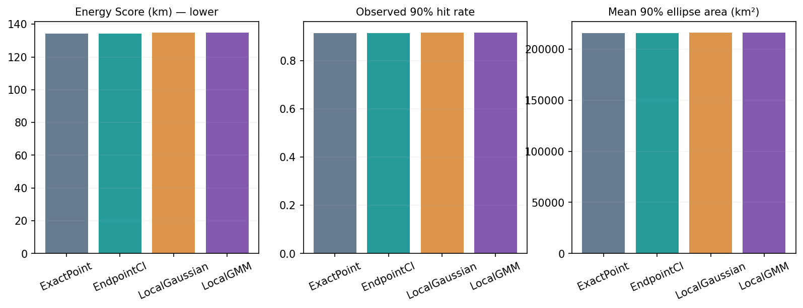
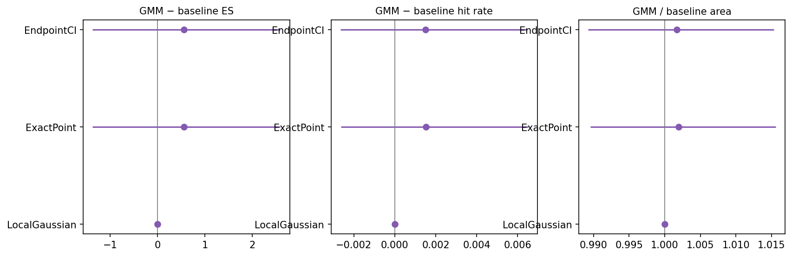
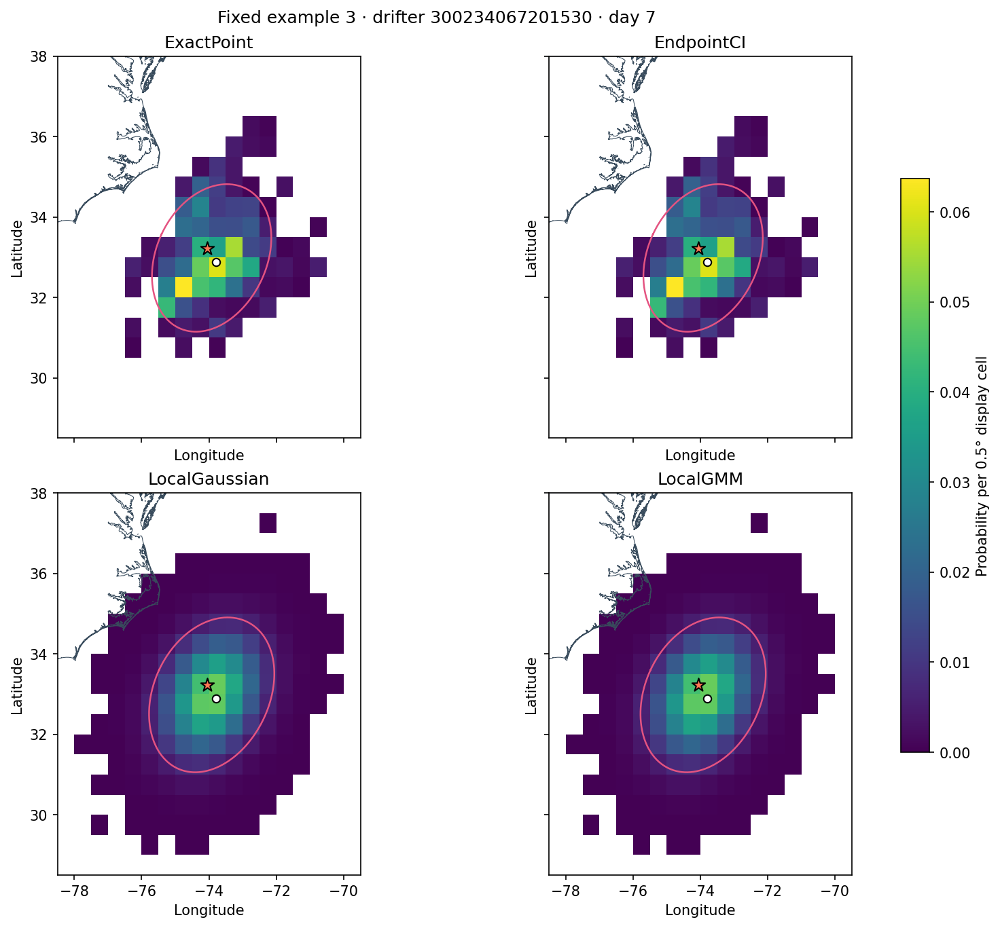
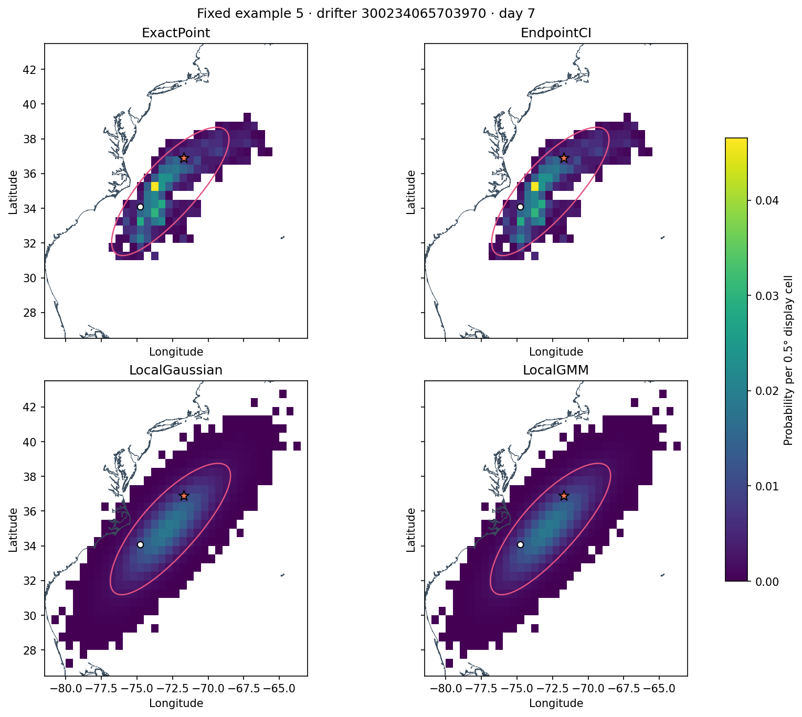

Step 5 E2 · 局部高斯混合
训练期选出 K=1。未达到质量不退化改善标准。
七天预测；2001–2019 训练、2020–2022 开发验证；完整 33,971 个起点、45 条 drifter。近邻、原始终点及配对训练票数保持不变。K=1 时 LocalGMM 与 LocalGaussian 是同一模型。
四组完整结果
|
energy_km |
h90 |
area90_km2 |
land_mass |
outside_D_mass |
| model |
|
|
|
|
|
| ExactPoint |
134.223563 |
0.913921 |
215,666.889355 |
0.000000 |
0.000000 |
| EndpointCI |
134.223517 |
0.913939 |
215,732.078194 |
0.000001 |
0.000000 |
| LocalGaussian |
134.777135 |
0.915438 |
216,097.009870 |
0.005988 |
0.002969 |
| LocalGMM |
134.777135 |
0.915438 |
216,097.009870 |
0.005988 |
0.002969 |

ES 越低越好；命中率与面积须一起判断。区域统一为完整分布的单个 90% 分位椭圆，0.5° cell 仅用于展示。
配对效果与不确定性


区间来自 10,000 次整条 ID 重抽；这里是开发验证证据，不是独立最终测试。
支撑与回退
GMM 查询回退：0.000%；drifter 等权回退：0.000%；涉及 0 / 45 条 drifter。EndpointCI 不可用 error 的保留点质量：6.213%。两种回退含义不同。
六个预先固定案例
白点为真实起点，星号为七天后记录位置，红线为共同定义的 90% 椭圆。每例四组使用相同范围与色标。




